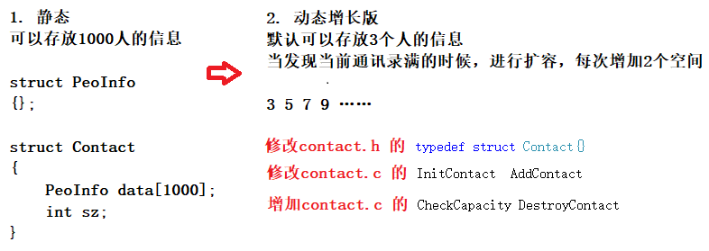

通讯录Contact
- 存放1000个好友的信息 ： 名字 电话 性别 住址 年龄
- 增加好友信息
- 删除指定名字的好友信息
- 查找好友信息
- 修改好友信息
- 打印好友信息
- 排序

简单流程

详细代码
test.c 测试
#define _CRT_SECURE_NO_WARNINGS 1
#include "contact.h"
void menu()
{
printf("*****************************************\n");
printf("****** 1. add 2. del *******\n");
printf("****** 3. search 4. modify *******\n");
printf("****** 5. show 6. sort *******\n");
printf("****** 0. exit *******\n");
printf("*****************************************\n");
}
int main()
{
int input = 0;
//创建通讯录
struct Contact con;//con就是通讯录，里边包含：data指针和size，capacity
//初始化通讯录
InitContact(&con);
//
do
{
menu();
printf("请选择:>");
scanf("%d", &input);
switch (input)
{
case ADD:
AddContact(&con);
break;
case DEL:
DelContact(&con);
break;
case SEARCH:
SearchContact(&con);
break;
case MODIFY:
ModifyContact(&con);
break;
case SHOW:
ShowContact(&con);//即使是展示也要取地址，这种效率高
break;
case SORT:
SortContact(&con);
break;
case EXIT:
//销毁通讯录-释放动态开辟的内存
DestroyContact(&con);
printf("退出通讯录\n");
break;
default:
printf("选择错误\n");
break;
}
} while (input);
return 0;
}
contact.c 实现函数的功能
#define _CRT_SECURE_NO_WARNINGS 1
#include "contact.h"
void InitContact(struct Contact* ps)
{
ps->data = (struct PeoInfo*)malloc(DEFAULT_SZ * sizeof(struct PeoInfo));
if (ps->data == NULL)
{
return;
}
ps->size = 0;
ps->capacity = DEFAULT_SZ;
}
void CheckCapacity(struct Contact* ps)
{
if (ps->size == ps->capacity)
{
//增容
struct PeoInfo* ptr = realloc(ps->data, (ps->capacity + 2) * sizeof(PeoInfo));
if (ptr != NULL)
{
ps->data = ptr;
ps->capacity += 2;
printf("增容成功\n");
}
else
{
printf("增容失败\n");
}
}
}
void AddContact(struct Contact* ps)
{
//检测当前通讯录的容量
//1. 如果满了，就增加空间
//2. 如果不满，啥事都不干
CheckCapacity(ps);
//增加数据
printf("请输入名字:>");
scanf("%s", ps->data[ps->size].name);//数组
printf("请输入年龄:>");
scanf("%d", &(ps->data[ps->size].age));//int 要加&
printf("请输入性别:>");
scanf("%s", ps->data[ps->size].sex);
printf("请输入电话:>");
scanf("%s", ps->data[ps->size].tele);
printf("请输入地址:>");
scanf("%s", ps->data[ps->size].addr);
ps->size++;
printf("添加成功\n");
}
void ShowContact(const struct Contact* ps)
{
if (ps->size == 0)
{
printf("通讯录为空格\n");
}
else
{
int i = 0;
//标题
printf("%-20s\t%-4s\t%-5s\t%-12s\t%-20s\n", "名字", "年龄", "性别", "电话", "地址");
//数据
for (i = 0; i < ps->size; i++)
{
printf("%-20s\t%-4d\t%-5s\t%-12s\t%-20s\n",
ps->data[i].name,
ps->data[i].age,
ps->data[i].sex,
ps->data[i].tele,
ps->data[i].addr);
}
}
}
//没有声明，并加上static 这个函数只能在该源文件内调用，不会暴露在外面
static int FindByName(const struct Contact* ps, char name[MAX_NAME])
{
int i = 0;
for (i = 0; i < ps->size; i++)
{
if (0 == strcmp(ps->data[i].name, name))
{
return i;
}
}
return -1;//找不到的情况
}
void DelContact(struct Contact* ps)
{
char name[MAX_NAME];
int pos = 0;
printf("请输入要删除人的名字:>");
scanf("%s", name);
//1. 查找要删除的人在什么位置
//找到了返回名字所在元素的下标
//找不到返回 -1
pos = FindByName(ps, name);
//2. 删除
if (pos == -1)
{
printf("要删除的人不存在\n");
}
else
{
//删除数据
int j = 0;
for (j = pos; j < ps->size - 1; j++)
{
ps->data[j] = ps->data[j + 1];
}
ps->size--;
printf("删除成功\n");
}
}
void SearchContact(const struct Contact* ps)
{
int pos = 0;
char name[MAX_NAME];
printf("请输入要查找人的名字:>");
scanf("%s", name);
pos = FindByName(ps, name);
if (pos == -1)
{
printf("要查找的人不存在\n");
}
else
{
printf("%-20s\t%-4s\t%-5s\t%-12s\t%-20s\n", "名字", "年龄", "性别", "电话", "地址");
printf("%-20s\t%-4d\t%-5s\t%-12s\t%-20s\n",
ps->data[pos].name,
ps->data[pos].age,
ps->data[pos].sex,
ps->data[pos].tele,
ps->data[pos].addr);
}
}
void ModifyContact(struct Contact* ps)
{
int pos = 0;
char name[MAX_NAME];
printf("请输入要修改人的名字:>");
scanf("%s", name);
pos = FindByName(ps, name);
if (pos == -1)
{
printf("要修改人的信息不错在\n");
}
else
{
printf("请输入名字:>");
scanf("%s", ps->data[pos].name);
printf("请输入年龄:>");
scanf("%d", &(ps->data[pos].age));
printf("请输入性别:>");
scanf("%s", ps->data[pos].sex);
printf("请输入电话:>");
scanf("%s", ps->data[pos].tele);
printf("请输入地址:>");
scanf("%s", ps->data[pos].addr);
printf("修改完成\n");
}
}
//冒泡排序
void SortContact(struct Contact*ps)
{
for (int i = 0; i < ps->size; i++)//冒泡排序的趟数
{
int flag = 1; //假设这一趟要排序的数据已经有序
//每一趟冒泡排序
for (int j = 0; j < ps->size - i - 1; j++)
{
if (strcmp(ps->data[j].name, ps->data[j + 1].name) > 0)
{
PeoInfo temp;
temp = ps->data[j];
ps->data[j] = ps->data[j + 1];
ps->data[j + 1] = temp;
flag = 0; //本趟排序的数据其实不完全有序
}
}
if (flag == 1)
{
break;// if不能break,这个break是跳出外层循环
}
}
}
void DestroyContact(Contact* ps)
{
free(ps->data);
ps->data = NULL;
}
contact.h 声明函数
#define _CRT_SECURE_NO_WARNINGS 1
//#define MAX 1000
#define DEFAULT_SZ 3
#define MAX_NAME 20
#define MAX_SEX 5
#define MAX_TELE 12
#define MAX_ADDR 30
#include <stdio.h>
#include <string.h>
#include <stdlib.h>
enum Option
{
EXIT,//0
ADD, //1
DEL, //2
SEARCH, //3
MODIFY, //4
SHOW, //5
SORT //6
};
typedef struct PeoInfo
{
char name[MAX_NAME];
int age;
char sex[MAX_SEX];
char tele[MAX_TELE];
char addr[MAX_ADDR];
}PeoInfo;
//通讯录类型
typedef struct Contact
{
struct PeoInfo *data;//存放1000个信息
int size;//记录当前已经有的元素个数
int capacity;//当前通讯录的最大容量
}Contact;
//声明函数
//初始化通讯录的函数
void InitContact(struct Contact* ps);
//增加一个信息到通讯录
void AddContact(struct Contact* ps);
//打印通讯录中的信息
void ShowContact(const struct Contact* ps);
//删除指定的联系人
void DelContact(struct Contact* ps);
//查找指定的人的信息
void SearchContact(const struct Contact* ps);
//修改指定联系人
void ModifyContact(struct Contact* ps);
//排序通讯录内容
void SortContact(struct Contact*ps);
void DestroyContact(Contact* ps);